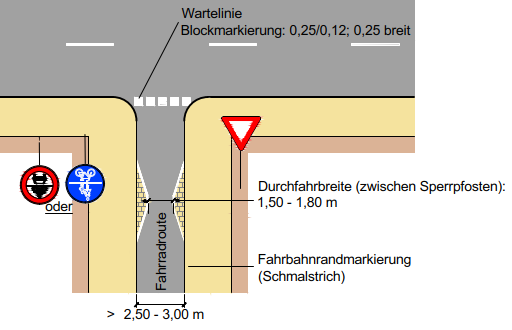

Letzte Änderung: 2019-09-21-18h45
Autor: Jens Spille
Die Radverkehrs-Mängel und Verbesserungsvorschläge, die auf dieser Seite gelistet sind, beziehen sich größtenteils auf unsere Mängelkarte (Übersicht). Somit steht einmal zur Übersicht die Mängelkarte zur Verfügung, andererseits steht diese Liste mit detaillierteren Angaben zur Verfügung.
Link zu Mängelkarte
Link zur Open Location Code Karte.
Um die Zuordnung der Mängel und Verbesserungsvorschläge zu ermöglichen, ist jeder Pin und jede Linie auf der Mängelkarte mit einer eindeutigen Bezeichnung versehen.
Als Bezeichner wird der Open Location Code verwendet. Der Open Location Code (OLC) gibt geographische Koordinaten an. Gegenüber der konventionellen Schreibweise in Winkelgrad ist er kompakt, eindeutig, und leicht an die erforderliche Genauigkeit anzupassen. OLC wird auch als “Plus Codes” bezeichnet.
So befindet sich zum Beispiel die Fahrrad-Selbsthilfewerkstatt mit den Ziffern 9F4F8P9F+J9 an der Stelle 52.319063,9.723438 (Heinrich-Hertz-Straße 23, 30966 Hemmingen, Deutschland). Das erste Ziffernpaar des Open Location Codes zerlegt den Globus in 20 × 20 Grad große Flächen. Norddeutschland liegt im Sektor 9F.

Jedes weitere OLC-Ziffernpaar „zwanzigselt“ den bis dahin definierten Bereich in jeder Dimension.Die Ziffern 9F4F beschreiben den Bereich um Hannover.

Zum Auffinden des Bereichs gibt man zum Beispiel die Ziffern ’9F4F8P9F+J9’auf der Webseite https://plus.codes ein.
| Kurzbeschreibung | Querungshilfe fehlt |
|---|---|
| Mängelkarte | Link |
| Feststelldatum | 2017-12-05-Di |
| Status | Verbesserungsvorschlag |
| Autor | Jens Spille |
| Ort | Devese K 221 / Stadweg |
| Fahrtrichtung | Von West nach Ost |
| Verantwortlich | Region |
Radfahrende aus Richtung Westen müssen ungesichert die Fahrbahn kreuzen, um auf den linksseitigen Radweg zu gelangen. Radfahrende haben keine vernünftige Alternative um die Fahrbahn sicher zu queren.

Angebot einer Alternative - z.B. indirektes Abbiegen.

| Kurzbeschreibung | Querungshilfe fehlt |
|---|---|
| Mängelkarte | Link |
| Feststelldatum | 2014 “Gesamtkonzept wasserbezogener Naherholung” |
| Status | Verbesserungsvorschlag |
| Autor | Jens Spille |
| Ort | Steinfeldsees bis Grassdachaus |
| Fahrtrichtung | Von West nach Ost |
| Verantwortlich | Hemmingen und Laatzen (plus Naturschutzbehörden) |
Es fehlt ein Konzept zur Entlastung und Entschärfung der sogenannten Wilkenburger Spinne. Bewohner, die von Westerfeld, Arnum oder Wilkenburg nach Laatzen müssen, haben keine andere Wahl, als über die Wilkenburger Spinne nach Wülfel zu fahren. Die Radwege in der Leinemasch sind bei Regen und im Winter nicht oder nur noch sehr eingeschränkt passierbar.
Hier sollte man die Diskussion über eine Brücke zwischen Wilkenburg und Laatzen, wie sie 2014 im „Gesamtkonzept wasserbezogener Naherholung“ vorgestellt wurde, wieder beleben. Es sollte untersucht werden, in wieweit eine Reduzierung von Abgasen, Feinstäube, Lärm und Unfallgefahren und die Förderung des Radverkehrs, einen Schotterweg in der Nähe des Steinfeldsees rechtfertigt.

| Kurzbeschreibung | Sichere Radführung über B3 |
|---|---|
| Mängelkarte | Link |
| Feststelldatum | 2018-01-05 Stellungsnahme vom VEP2030 |
| Status | Vorschlag |
| Autor | Jens Spille |
| Ort | Kreuzung B3 (alt) / Hoher Holzweg |
| Fahrtrichtung | Alle |
| Verantwortlich | Hemmingen (in Zukunft) |
Vom Hohen Holzweg kommend gibt es keinen Radweg zur Ampel. Unklare Verkehrsführung für Radfahrer, da die Streuscheibe der Ampel eine kombinierte Fußgänger und Radfahrer Ampel ist. Wenn Radfahrer vor der Shell Tankstelle stehen, besteht eine Gefahr durch Rechtsabbieger. Verwirrung durch ungünstige Verkehrsführung.
Radfahrer aus Hoher Holzweg in Richtung Sundernweg richten sich teilweise nach der LSA mit der gemeinsamen Streuscheibe für Fuß- und Radverkehr. Dazu wechseln sie von der Fahrbahn Hoher Holzweg auf den Hochbord, um die Furt des LSA zu benutzen (Karte - Punkt 1). Rechts abbiegende Autofahrer aus Hoher Holzweg übersehen leicht die Fußgänger und Radfahrer, da ein Schild den Blick versperrt (Karte - Punkt 2).
Das Radfahren von der Gartenstraße/Mühlenweg bis zur Shell-Tankstelle auf der linken Seite ist nicht freigegeben. Einen sicheren Übergang vom der Gartenstraße auf die rechte Fahrbahnseite gibt es nicht, deshalb fahren die Schüler, linksseitig auf den Fußweg, um dann die LSA Hoher Holzweg - Sundernweg zu benutzen. In umgekehrter Richtung ist der Fußweg an der B3 für Radfahrer frei gegeben “Fahrrad frei”.

Eine Radfahrerfurt nahe der Fahrbahn einrichten (blaue Linie). - Überweg in Höhe Gartenstraße einrichten.

| Kurzbeschreibung | Buckel in Hemminger Kirchweg nahe Osterbrückenweg |
|---|---|
| Mängelkarte | Link |
| Feststelldatum | 2019-05-27-Mo |
| Status | Gemeldet |
| Autor | Jens Spille |
| Ort | Hemminger Kirchweg |
| Fahrtrichtung | Alle |
| Verantwortlich | Stadt Hannover |
Diese Meldung kam über RADar! rein. ID: 2019-19480
Adresse: Großer Hemminger Teich, Hemminger Kirchweg, Wilkenburg, Hemmingen, Region Hannover, Niedersachsen, 30966, Deutschland
Meldungsgrund: Loch, Unebenheit, Bruch oder Riss im Oberbau erhöht Sturzrisiko
weitere Angaben: An der Grenze zur Stadt Hannover 52.335427,9.738917
| Kurzbeschreibung | Drängelgitter |
|---|---|
| Mängelkarte | Link |
| Feststelldatum | ? |
| Status | Gemeldet |
| Autor | Jens Spille |
| Ort | Hemmingen, Am Siek |
| Fahrtrichtung | Alles |
| Verantwortlich | Stadt Hannover |
Umlaufgitter verhindern das Durchkommen von Fahrrädern mit Anhänger und Lastenräder.
ERA: “Poller sind unzulässig, wo Verkehrsteilnehmer gefährdet oder der Verkehr erschwert werden kann. Sie müssen nachts und bei schlechten Sichtverhältnissen ausreichend erkennbar sein.”

Umlaufgitter entfernen, evtl. Verengung auf mindestens 2 m, um KFZ Verkehr zu verhindern.

Evtl. rote Furt über Klewertweg. Vorfahrt ändern. Um bessere Sichtverhältnisse zu gewähren.
| Kurzbeschreibung | unglücklich um die Ecke kurven |
|---|---|
| Mängelkarte | Link |
| Feststelldatum | Stadtradeln 2019 |
| Status | Hohe Bünte |
| Autor | Jens Spille |
| Ort | Hohe Bünte - Nähe Freibad |
| Fahrtrichtung | Alle |
| Verantwortlich | Stadt Hemmingen |
Meldung per Radar! ID: 2019-19546
Adresse: Hohe Bünte, Wilkenburg, Hemmingen, Region Hannover, Niedersachsen, 30966, Deutschland
Meldungsgrund: Auffahrt auf Radweg nur mit Umweg möglich
weitere Angaben: Wenn man aus Ricklingen kommt, und vor der Shinebar auf die Straße fahren möchte (Fahrradstraße) muss man unglücklich um die Ecke kurven.
Verbindung verbessern
| Kurzbeschreibung | Radweg verschwenkt und verengt |
|---|---|
| Mängelkarte | Link |
| Feststelldatum | 2017-09-11 |
| Status | offen |
| Autor | M. Schröder |
| Ort | Brückstr. |
| Fahrtrichtung | Alle |
| Verantwortlich | Region (Kreis) |
Für eine Brücke wird der Radweg verschwenkt und verengt, die Verschwenkung ist im Dunklen schlecht erkennbar, die Breite ist für sich begegnende Radfahrer eng.
Mangel/Gefahr: Der Radweg entlang der K20 wird für eine kleine Brücke stark verschwenkt und die Radwegbreite eingeschränkt. Die Radwegführung ist im Dunklen schlecht erkennbar, der Radweg wird sehr eng an die K20 herangeführt (Abgrenzung nur durch eine Art Bordstein), die Radwegbreite im Bereich der Verschwenkung ist für sich begegnende Radfahrer eng. Ergänzung: Von Hemmingen Richtung Hannover ist eine Absperrschranke (Zeichen 600) angebracht, die in Richtung Hemmingen fehlt.
Mögliche Maßnahmen: Erkennbarkeit im Dunklen durch geeignete Reflektoren o. ä. erhöhen, Absperrschranke auch in Richtung Hemmingen anbringen, Abgrenzung des Radwegs in Richtung des Gewässers und der Straße verbessern.
| Kurzbeschreibung | Konflikt zwischen Wartenden und Radfahrern |
|---|---|
| Mängelkarte | Link |
| Feststelldatum | Stadtradeln 2019 |
| Status | offen |
| Autor | Jens Spille |
| Ort | Berliner Straße - Haltestelle KGS |
| Fahrtrichtung | Alle |
| Verantwortlich | Stadt Hemmingen |
Über RADar! wurde eine neue Meldung eingestellt. ID: 2019-19547
Adresse: Berliner Straße, Hemmingen, Wilkenburg, Hemmingen, Region Hannover, Niedersachsen, 30966, Deutschland
Meldungsgrund: Unfallschwerpunkt
weitere Angaben: Den Trampelpfad bei der Bushaltestelle Börie als Radweg ausbauen (direkter Weg zur KGS). Wenn man als Fußgänger in den Bus steigen will, ist es sehr unangenehm, wenn die vielen Schüler die aus der Börie kommen zwischen den wartenden Passanten hindurch kurven.
Trampelpfad bei der Bushaltestelle Börie als Radweg ausbauen.
| Kurzbeschreibung | Radweg an der Berliner Straße wird in der Einmündung Hohe Bünte extrem eingeschränkt. |
|---|---|
| Mängelkarte | Link |
| Feststelldatum | 2017-09-10 |
| Status | ? |
| Autor | Jens Spille |
| Ort | Hemmingen - Westerfeld - Berliner Straße - Einmündung Hohe Bünte |
| Koordinaten: 52.32563/9.74227 | |
| Fahrtrichtung | In beiden Richtungen |
| Verantwortlich |
Radfaher auf dem gemeinsamen, einseitigen, zweirichtungs Rad- und Fußweg, müssen in der Einmündung Hohe Bünte der eingerückten Furt folgen. Hinzu kommt das die Radfahrerfurt sehr schmal und nur einseitig vom Zebrastreifen angeordnet ist. Damit ist der Radfahrer nicht mehr im Sichtfeld des von der Berliner Straße kommenden rechts abbiegenden Autofahrer.


Straßenbegleitende Radwegeführung
| Kurzbeschreibung | unangenehme Höhenunterschiede |
|---|---|
| Mängelkarte | Link |
| Feststelldatum | Stadtradeln 2019 |
| Status | offen |
| Autor | Jens Spille |
| Ort | Döhrener Str. |
| Fahrtrichtung | In beiden Richtungen |
| Verantwortlich | Region |
Über RADar! wurde eine neue Meldung eingestellt. ID: 2019-19544
Adresse: Hemminger Kirchweg, Wilkenburg, Hemmingen, Region Hannover, Niedersachsen, 30966, Deutschland
Meldungsgrund: Übergänge mit zu großen Höhenunterschieden (z. B. Bordsteine)
weitere Angaben: Bei der Reparatur der Brücke wurde auf Kosten der Radfahrer die Autofahrbahn sehr eben gestaltet. Radfahrer dagegen versprühen sehr unangenehme Höhenunterschiede, insbesondere bei Geschwindigkeiten von mehr als 20 km /h. Der Übergang müsste in einem flacheren Winkel und ohne Übergang erfolgen. Vor der Reparatur war der Radweg eben, ohne jede Erhöhung.
Der Übergang müsste in einem flacheren Winkel und ohne Übergang erfolgen.
| Kurzbeschreibung | Bordsteinabsenkung |
|---|---|
| Mängelkarte | Link |
| Feststelldatum | 2018-09-15 |
| Status | Bauamt bekannt |
| Autor | Jens Spille |
| Ort | Berliner Straße - Döhrener Str. |
| Fahrtrichtung | In beiden Richtungen |
| Verantwortlich | Hemmingen |
Die Auffahrt auf den Radweg Berliner Str. aus dem Dorf kommend ist schwierig, da die Bordsteinabsenkung nur in Richtung Döhren existiert.
Bordstein Abflachung